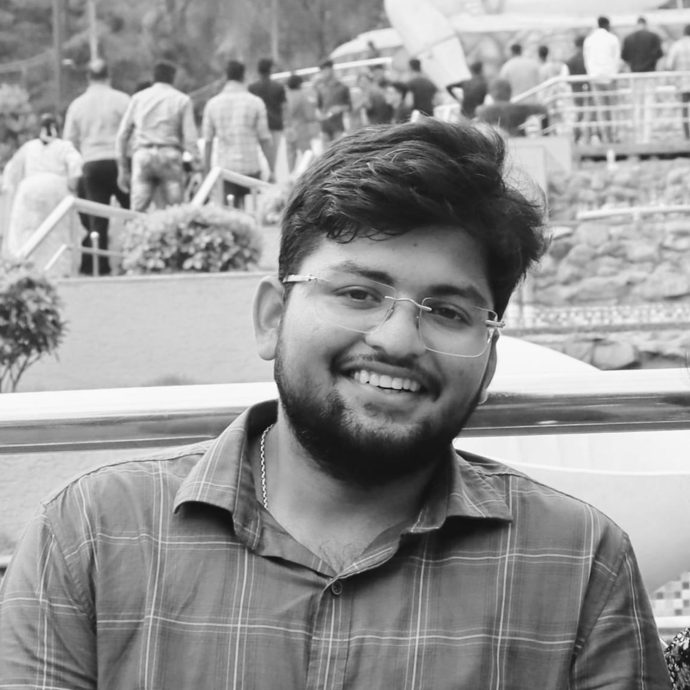
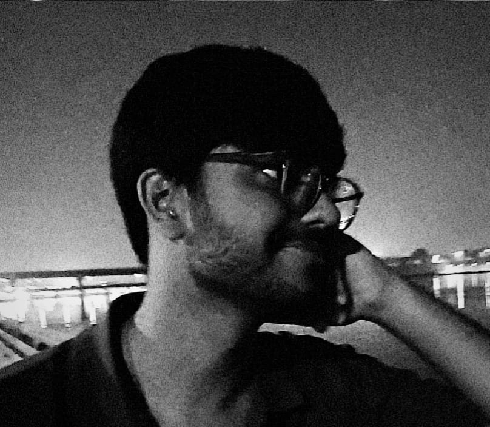

<div class="main-content">
  <section id="team" class="team">
    <h2>Our Team</h2>
    <div class="team-members-container">
      <div class="team-member">
        <div class="member-image-container">
          
        </div>
        <h3>Sai Gopal Rachakonda</h3>
        <p class="role">Electromagnetics & Control Systems Engineer</p>
        <p class="description">Analog Electronics | Quantum Sensors | Electronic Testing | Traveler</p>
        <p class="bio">I specialize in electromagnetics, analog electronics, and control engineering theory with hands-on experience in electronic testing and simulations. Currently exploring atomic-level electronics and quantum sensor technologies. I'm passionate about bridging theoretical concepts with practical implementations and always eager to collaborate on innovative research projects. Outside the lab, I'm an avid traveler who finds inspiration in exploring different cultures and natural landscapes.</p>
      </div>

      <div class="team-member">
        <div class="member-image-container">
          
        </div>
        <h3>Divyam Sharma</h3>
        <p class="role">Electrical Engineer & Research Enthusiast</p>
        <p class="description">IIEST Shibpur Alumni | Sustainable Tech | Nature Explorer | AI/ML</p>
        <p class="bio">As an engineer from IIEST Shibpur, I focus on computational methods and sustainable technology solutions. I'm deeply curious about learning AI/ML applications in scientific research and passionate about minimizing environmental impact through eco-friendly engineering approaches. I enjoy exploring nature and believe sustainable innovation is key to our future. We're both committed to collaborative research and looking forward to contributing meaningful work to the scientific community.</p>
      </div>
    </div>
  </section>
</div>